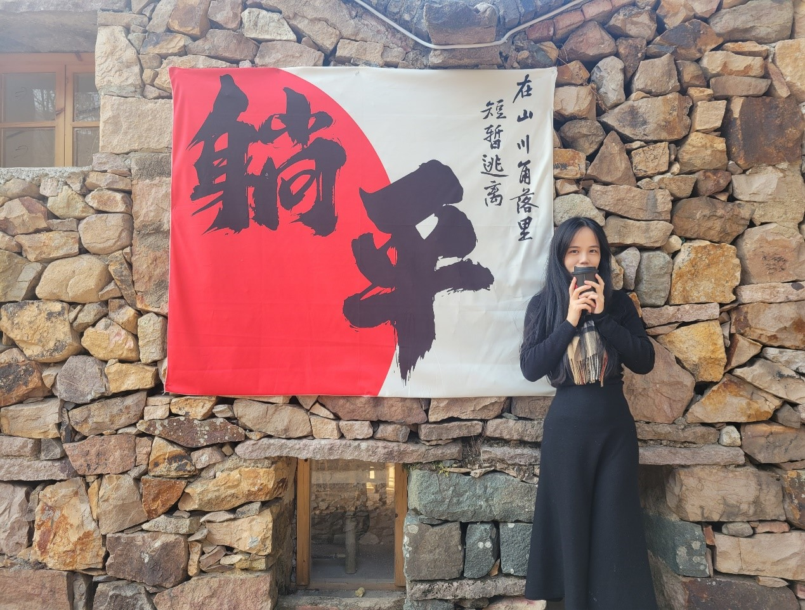

In the hustle and bustle of the city, cars come and go, lights are bright, everything is running normally. However, there is a group of middle-aged people who are experiencing the silent impact of unemployment. Once, they were the dominant figures in the workplace and the breadwinners of their families. Now, due to the vicissitudes of the economic market, they are Mired in unemployment. Overnight, they met with professional failures.
Zhang Ziming, 42, a middle-aged man who used to work as a middle manager in a large enterprise in Hangzhou, lost his job last year due to poor management of the company. Now, he is a full-time homemaker. Recalling the early days of unemployment, Zhang Ziming admitted that he had fallen into deep remorse and confusion, he said, "every month's high mortgage and car loans, I can't kick the gas." He felt he had lost his value and was filled with uncertainty and fear for the future. Graduating from a prestigious school, he never thought he would experience the distress of unemployment. After losing his job, Zhang Ziming 's life changed dramatically. He began to take on the responsibility of taking the children to school, shopping for food and cooking. He revealed that he now has to re-plan his spending and cut back on non-essential items such as movies and other leisure activities. He began to get used to buying items on sale and saving money when he could. In order to regain the direction of life, Zhang Ziming began to try various methods, hoping to regain the direction of life. He first participated in vocational training, hoping to enhance his job competitiveness by upgrading his skills. During the training process, he earnestly learned new knowledge, actively participated in discussions and practices, and constantly improved his professional quality. At the same time, Zhang Ziming also actively sought the help of friends. He asked friends for job search experience to understand the market needs and industry dynamics. On the recommendation of his friends, he sent out multiple resumes and participated in many interviews. Although he encountered many failures and setbacks in the process, he believed that he could stand up again. Although the days after unemployment are full of hardships, Zhang Ziming has always maintained an optimistic attitude. He knows that life will not always be easy, but he also believes that difficulties are only temporary. This, he told himself, was just a minor setback on the road to success. He believes that with his own efforts and persistence, he will be able to return to work as soon as possible.
Similar to Zhang Ziming's experience, Li Xin is also an unemployed middle-aged woman, 45 years old. She once worked as a product manager in an Internet company in Shenzhen. As a senior technician, she enjoyed a stable income and good welfare benefits. However, with a wave of layoffs in large factories, Li Xin finally failed to avoid the fate of layoffs. After losing her job, Ms. Li faced unprecedented challenges. She not only has to deal with the financial pressure, but also face the psychological gap. The once familiar working environment and colleagues are now a distant memory. "After I lost my job, I tried to send out a lot of resumes, but I didn't get any replies, which made me feel very frustrated," she said. In order to support her family, Li Xin began to try various part-time and temporary jobs. She used her expertise to open a Taobao store and run an e-commerce business. Although the income is not stable, but can barely make ends meet. In fact, unemployment for Li Xin, the psychological blow is far more serious than the economic hardship. She often feels that she has lost direction and a sense of belonging, and is full of uncertainty and worry about the future. When night falls, she often sits alone at the window, gazing out at the world, full of worries. "To some extent, at my age, you've lost your age advantage in the job market." "She exclaimed. She admits that there was a time when she often wondered about the meaning of life and wondered if she would ever find a new direction and purpose. She was acutely aware of the impermanence of life. She understands that life will not always go according to her expectations, and for now, she can only try to face the reality. In the interview, Li Xin said that at this stage, she is actively adjusting her mentality, facing the plight of unemployment, she did not choose depression. Instead, she found a new way out by meeting more friends who were also unemployed, starting side businesses together. In addition to e-commerce, she is bold to try, involved in community group buying business, selling fresh food. She firmly believes that as long as you work hard, you will be able to regain that initial confidence. Li Xin's optimism infects the people around her, and her experience also encourages more people like her to bravely move forward in difficult situations.
